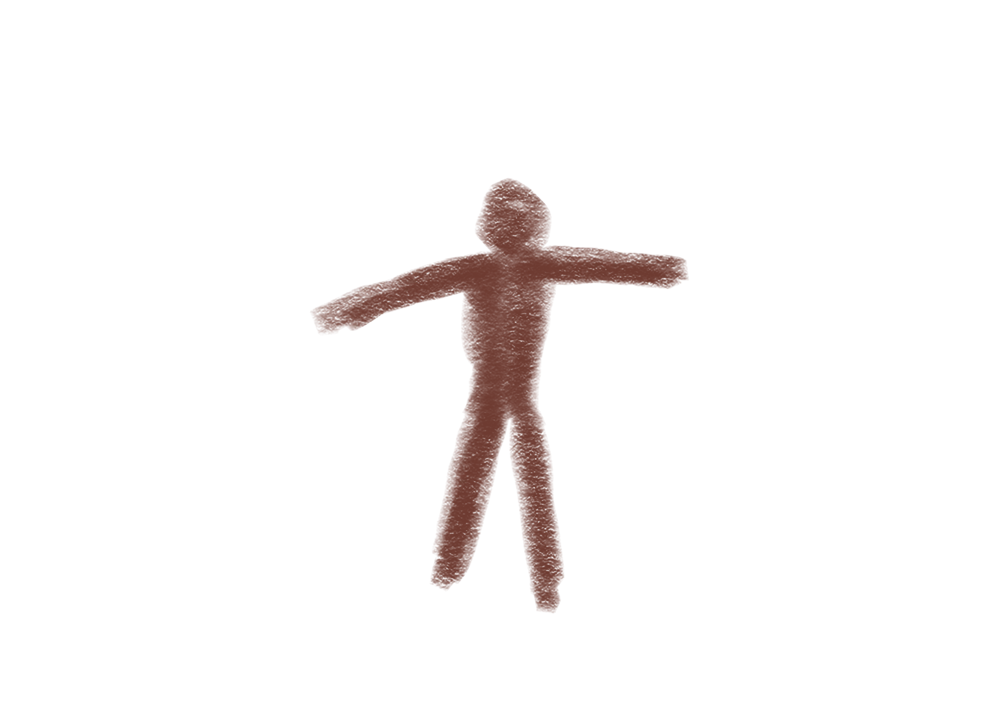
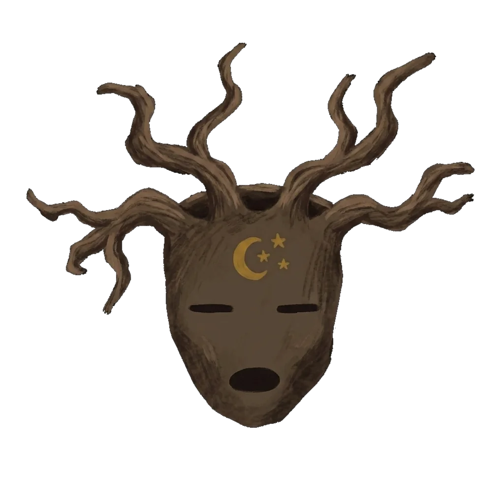
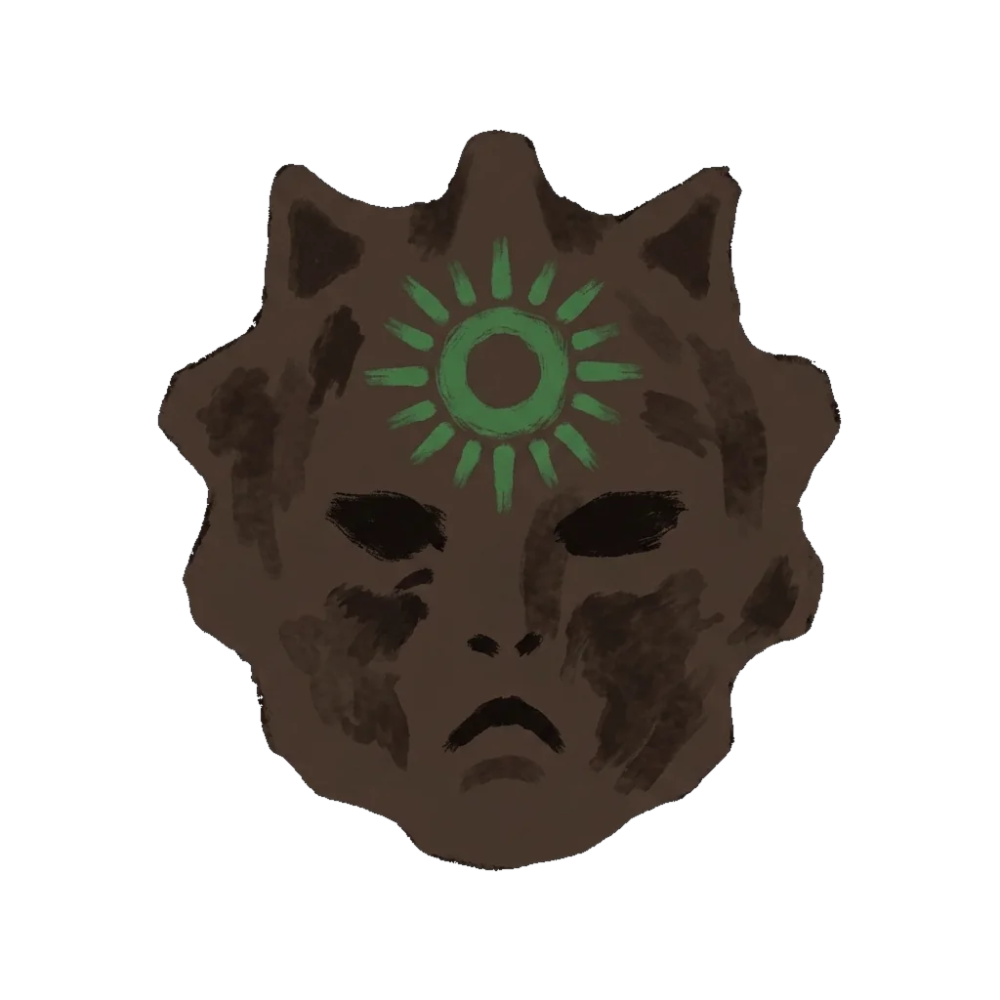

Nivel 5
El Canto de los Espíritus
Despierta los espíritus del territorio
arrastra las máscaras a los dibujos rupestres
arrastra las máscaras a los dibujos rupestres
arrastra las máscaras a los dibujos para darles vida


próximamente